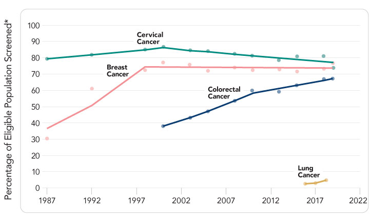

Part 1
Cancer Screening in the United States: Challenges and Opportunities
An estimated 3.2 million U.S. cancer deaths have been averted since 1991 because of improvements in early detection and treatment, as well as reductions in smoking. However, cancer continues to be a major public health problem in the United States, with 1.9 million new cancer cases and more than 600,000 cancer deaths expected in 2021.1 In addition to the toll cancer imposes on individuals, families, and communities, cancer deaths cost the United States over $90 billion per year in lost earnings.2
Cancer screening has been shown to save lives, but there currently are significant gaps in screening uptake and timely receipt of follow-up care after an abnormal screening test result, including among many populations that often are medically underserved. The President’s Cancer Panel has determined that more effective and equitable implementation of cancer screening represents a significant opportunity for the National Cancer Program, with potential to accelerate the decline in cancer deaths and, in some cases, prevent cancer through detection and removal of precancerous lesions.
This report focuses on the four cancers—breast, cervical, colorectal, and lung—for which the U.S. Preventive Services Task Force (USPSTF) recommends screening for eligible individuals.3-6 * Several other organizations also issue screening guidelines for these cancers (Table 1). While there are differences in details among guidelines—for example, related to recommended age at initiation, frequency of screening, and/or screening modality—guideline organizations are united in their belief that regular and appropriate cancer screening helps save lives. Most cancer screening guidelines are for people at average risk of cancer, with eligibility often based primarily on age. Lung cancer screening, however, is recommended based on smoking history. There also are screening recommendations tailored to those at high risk for breast or colorectal cancer based on personal or family history of cancer. Cancer screening guidelines are for asymptomatic individuals; any person experiencing symptoms consistent with cancer should follow up with a healthcare provider for a diagnostic workup.
Table 1
Cancer Screening Guidelines
| Cancer Type | Organizations Issuing Screening Guidelines |
|---|---|
| Breast |
American Cancer Society American College of Obstetricians and Gynecologists American College of Physicians American College of Radiology and Society of Breast Imaging American Society of Breast Surgeons National Comprehensive Cancer Network U.S. Preventive Services Task Force |
| Cervical |
American Cancer Society American College of Physicians U.S. Preventive Services Task Force |
| Colorectal |
American Academy of Family Physicians American Cancer Society American College of Gastroenterology American College of Physicians National Comprehensive Cancer Network U.S. Multi-Society Task Force for Colorectal Cancer U.S. Preventive Services Task Force |
| Lung |
American Academy of Family Physicians American Association for Thoracic Surgery American Cancer Society American College of Chest Physicians National Comprehensive Cancer Network U.S. Preventive Services Task Force |
Note: This list may not be comprehensive. Organizations are listed only if they develop their own guidelines. Organizations that endorse the guidelines of another organization are not listed.
View Table Sources
Sources: American Cancer Society. American Cancer Society guidelines for the early detection of cancer [Internet]. Atlanta (GA): ACS; [updated 2020 Jul 30; cited 2021 Feb 26]. Available from: https://www.cancer.org/healthy/find-cancer-early/cancer-screening-guidelines/american-cancer-society-guidelines-for-the-early-detection-of-cancer.html; Oeffinger KC, et al. JAMA. 2015;314(15):1599-614. Available from: https://www.ncbi.nlm.nih.gov/pubmed/26501536; Smith RA, et al. CA Cancer J Clin. 2019;69(3):184-210. Available from: https://www.ncbi.nlm.nih.gov/pubmed/30875085; The American College of Obstetricians and Gynecologists. Breast cancer risk assessment and screening in average-risk women. Practice Bulletin Number 179 [Internet]. 2017 [cited 2021 Nov 9]. Available from: https://www.acog.org/clinical/clinical-guidance/practice-bulletin/articles/2017/07/breast-cancer-risk-assessment-and-screening-in-average-risk-women; Qaseem A, et al. Ann Intern Med. 2019;170(8):547-60. Available from: https://pubmed.ncbi.nlm.nih.gov/30959525; Monticciolo DL, et al. J Am Coll Radiol. 2018;15(3 Pt A):408-14. Available from: https://www.ncbi.nlm.nih.gov/pubmed/29371086; Monticciolo DL, et al. J Am Coll Radiol. 2021;18(9):1280-8. Available from: https://pubmed.ncbi.nlm.nih.gov/34154984; The American Society of Breast Surgeons. Position statement on screening mammography. Columbia (MD): ASBrS; 2019 May 3. Available from: https://www.breastsurgeons.org/docs/statements/Position-Statement-on-Screening-Mammography.pdf; The American Society of Breast Surgeons. Consensus guideline on diagnostic and screening magnetic resonance imaging of the breast. Columbia (MD): ASBrS; 2017 Jun 22. Available from: https://www.breastsurgeons.org/docs/statements/Consensus-Guideline-on-Diagnostic-and-Screening-Magnetic-Resonance-Imaging-of-the-Breast.pdf; Bevers TB, et al. J Natl Compr Canc Netw. 2018;16(11):1362-89. Available from: https://pubmed.ncbi.nlm.nih.gov/30442736; U.S. Preventive Services Task Force. Final recommendation statement: breast cancer: screening. Rockville (MD): USPSTF; 2016 Jan 11. Available from: https://www.uspreventiveservicestaskforce.org/uspstf/recommendation/breast-cancer-screening; Fontham ETH, et al. CA Cancer J Clin. 2020;70(5):321-46. Available from: https://www.ncbi.nlm.nih.gov/pubmed/32729638; Sawaya GF, et al. Ann Intern Med. 2015;162(12):851-9. Available from: https://pubmed.ncbi.nlm.nih.gov/25928075; U.S. Preventive Services Task Force. Final recommendation statement: cervical cancer: screening. Rockville (MD): USPSTF; 2018 Aug 21. Available from: https://www.uspreventiveservicestaskforce.org/uspstf/recommendation/cervical-cancer-screening; American Academy of Family Physicians. Clinical preventive service recommendation: colorectal cancer [Internet]. Leawood (KS): AAFP; [cited 2021 Nov 2]. Available from: https://www.aafp.org/family-physician/patient-care/clinical-recommendations/all-clinical-recommendations/colorectal-cancer-adults.html; Wolf AMD, et al. CA Cancer J Clin. 2018;68(4):250-81. Available from: https://www.ncbi.nlm.nih.gov/pubmed/29846947; Shaukat A, et al. Am J Gastroenterol. 2021;116(3):458-79. Available from: https://www.ncbi.nlm.nih.gov/pubmed/33657038; Qaseem A, et al. Ann Intern Med. 2019;171(9):643-54. Available from: https://pubmed.ncbi.nlm.nih.gov/31683290; National Comprehensive Cancer Network. Colorectal cancer screening [Internet]. Plymouth Meeting (PA): NCCN; [cited 2021 Jun 4]. Available from: https://www.nccn.org/guidelines/guidelines-detail?category=2&id=1429; Provenzale D, et al. J Natl Compr Canc Netw. 2020;18(10):1312-20. Available from: https://pubmed.ncbi.nlm.nih.gov/33022639; Rex DK, et al. Gastrointest Endosc. 2017;86(1):18-33. Available from: https://pubmed.ncbi.nlm.nih.gov/28600070; Giardiello FMS, et al. Gastroenterology. 2014;147(2):502-26. Available from: https://www.ncbi.nlm.nih.gov/pubmed/25043945; U.S. Preventive Services Task Force. Final recommendation statement: colorectal cancer: screening. Rockville (MD): USPSTF; 2021 May 18. Available from: https://www.uspreventiveservicestaskforce.org/uspstf/recommendation/colorectal-cancer-screening; American Academy of Family Physicians. Clinical preventive service recommendation: lung cancer [Internet]. Leawood (KS): AAFP; [cited 2020 Dec 9]. Available from: https://www.aafp.org/family-physician/patient-care/clinical-recommendations/all-clinical-recommendations/lung-cancer.html; Jaklitsch MT, et al. J Thorac Cardiovasc Surg. 2012;144(1):33-8. Available from: https://pubmed.ncbi.nlm.nih.gov/22710039; Mazzone PJ, et al. Chest. 2018;153(4):954-85. Available from: https://pubmed.ncbi.nlm.nih.gov/29374513; Wood DE, et al. J Natl Compr Canc Netw. 2018;16(4):412-41. Available from: https://pubmed.ncbi.nlm.nih.gov/29632061; U.S. Preventive Services Task Force. Final recommendation statement: lung cancer: screening. Rockville (MD): USPSTF; 2021 Mar 9. Available from: https://www.uspreventiveservicestaskforce.org/uspstf/recommendation/lung-cancer-screening
Screening Reduces the Burden of Cancer
Cancer screening tests have been available for cervical, breast, and colorectal cancers for decades. Lung cancer screening via low-dose computed tomography (CT) has been recommended since 2013. Uptake of these tests has had a measurable impact on mortality and, in some cases, incidence of these cancers:
- Breast cancer—Screening mammography, along with advances in treatment, substantially contributed to the 50 percent reduction in breast cancer mortality in the United States between 1975 and 2012.7
- Cervical cancer—Screening using the Papanicolaou test (Pap smear) and, more recently, human papillomavirus (HPV) testing has been largely responsible for the 58 percent drop in cervical cancer incidence and nearly 60 percent reduction in cervical cancer mortality between 1975 and 2017 in the United States.8
- Colorectal cancer—Rates of colorectal cancer incidence and mortality have declined by more than one-third over the past 30 years, a trend that has been credited to expansion of screening.9,10 It is estimated that about two-thirds of colorectal cancer deaths in the United States could be avoided through screening.1,11,12 Most colorectal cancer screening in the United States is done via colonoscopy, though other visual tests (e.g., sigmoidoscopy) and stool-based tests (e.g., fecal immunochemical test [FIT]) also are available.
- Lung cancer—Although it is too soon to assess the impact of lung cancer screening at the population level, the U.S. National Lung Cancer Screening Trial determined that annual low-dose computed tomography reduced lung cancer mortality by 20 percent in high-risk individuals.13 Trials in other countries have yielded similar outcomes.14
Cancer Screening Uptake Is Incomplete and Uneven
Despite the established benefits of cancer screening, there are significant gaps between recommended screening and screening uptake (Figure 1). Rates are particularly low for lung cancer, in large part because screening has only been recommended since 2013. Colorectal cancer screening has increased in recent years, but continued momentum is needed to achieve target rates. While rates of breast and cervical cancer screening are higher, they have plateaued over the past 20 years, leaving many without the benefits of screening. Furthermore, many people at high risk for cancer due to their personal or family history are not being identified or offered appropriate high-risk screening (e.g., initiation at an earlier age, more frequent screening, different screening modality). Cancer screening effectiveness depends on timely follow-up care and diagnostic resolution after an abnormal screening test result.15 There currently are insufficient data on follow-up for abnormal lung cancer screening results, but gaps in follow-up have been documented for mammography, Pap and HPV tests, and stool-based tests.16
Figure 1
U.S. Cancer Screening Rates
View Figure Sources
*Breast cancer: Percentage of females aged 50–74 years who have had mammography within the past 2 years. Cervical cancer: Percentage of females aged 21–65 years who are up to date with cervical cancer screening. For 2013 and before, up to date with cervical cancer screening was defined as having a Pap test within the past 3 years. For 2014–2018, up to date was defined as having a Pap test within the past 3 years for women aged 21–65 years, or, for women aged 30–65, having an HPV test with a Pap test in the past 5 years. Colorectal cancer: Percentage of adults aged 50–75 years who are up to date with colorectal cancer screening. Before 2016, up to date was defined as having fecal occult blood test (FOBT) every year, a sigmoidoscopy every 5 years in combination with FOBT every 3 years, or a colonoscopy every 10 years. Since 2016, up to date has been defined as FOBT or fecal immunochemical test (FIT) every year, fecal DNA testing at least every 3 years, CT colonography every 5 years, flexible sigmoidoscopy alone every 5 years or every 10 years in combination with yearly FIT, or colonoscopy every 10 years. Lung cancer: Proportion of adults who have been screened for lung cancer using low-dose CT in the past year among those who are aged 55–80 years who have smoked for 30+ pack-years and who currently smoke or have quit within the past 15 years.
Source for breast, cervical, and colorectal cancers: Centers for Disease Control and Prevention, National Center for Health Statistics. National Health Interview Survey. Weighted regression lines are calculated using the Joinpoint Trend Analysis Software, Version 4.8 April 2020, National Cancer Institute. Available from http://progressreport.cancer.gov. Source for lung cancer: Fedewa SA, Kazerooni EA, Studts JL, et al. State variation in low-dose computed tomography scanning for lung cancer screening in the United States. J Natl Cancer Inst. 2021;113(8):1044-52. Available from: https://www.ncbi.nlm.nih.gov/pubmed/33176362
Although there are differences among cancer types, the following factors are associated with lower rates of screening or follow-up after abnormal screening test result among age-eligible adults across multiple cancers:9,17-21
- No usual source of healthcare
- Uninsured or underinsured status
- Recent immigrant status
- Less than high school education
- Low income
- Younger age
- American Indian/Alaska Native, Asian, Black, or Hispanic race/ethnicity
- Residence in a rural or remote area.
Numerous barriers to cancer screening—including the initial screening test and follow-up care after an abnormal screening test result—have been documented for both patients and providers. Patients report lack of awareness or understanding, concerns about the cost of screening or follow-up care, discomfort with screening or follow-up procedures, lack of trust in providers, belief that screening is not a priority, stigma, and fear of cancer diagnosis or cancer treatment.22-28 Logistical challenges—such as lack of time due to competing personal demands, lack of paid time off work, availability or cost of transportation, and dependent care—also play a role for some patients.22-28 Some eligible patients also say their providers have not recommended cancer screening.22-28 Provider barriers to cancer screening include lack of familiarity with guidelines, challenges identifying eligible patients, insufficient time to discuss screening, disagreement with or skepticism about screening guidelines, challenges conducting shared decision-making (particularly for lung cancer), and anticipated burden of managing abnormal results.23,29,30
Equitable Cancer Screening Must Be a Public Health Priority
Screening tests for breast, cervical, colorectal, and lung cancers can detect cancer at earlier stages when it is more likely to respond to treatment and, in some cases, can prevent cancer through detection of precancerous lesions. Gaps in cancer screening must be closed to realize its full potential. Efforts to close these gaps and equitably implement cancer screening in the United States must go beyond the initial screening test; to complete the screening process, individuals also must receive all recommended follow-up care for abnormal screening test results and receive a definitive diagnosis and action plan (e.g., return to regular screening, increased surveillance, cancer treatment). All too often, populations that are medically underserved have lower rates of cancer screening and follow-up care, putting them at greater risk of late-stage cancer diagnoses and death. Inadequate risk assessment also means that many people at high risk of cancer are not identified or given the opportunity to benefit from more intensive screening.
In this report, the President’s Cancer Panel sets forth four goals to optimize evidence-based cancer screening in the United States. The recommendations for achieving these goals acknowledge the importance of clear and actionable information for empowering patients and providers, the need to facilitate easy access to screening services, and the opportunity to improve systems to make screening more efficient and equitable. The Panel’s recommendations and some of the stakeholders responsible for implementing them are detailed in the following section of the report and summarized on the Recommendations at a Glance page. The Panel urges all stakeholders—from large national organizations and agencies to small community groups—to work together to achieve the full promise of cancer screening.
SCREENING DURING A PANDEMIC:
LESSONS LEARNED FROM COVID-19
Rates of cancer screening plummeted in the spring of 2020 when many healthcare services were suspended due to the coronavirus disease 2019 (COVID-19) pandemic. This sparked concern within the cancer community about the impact of missed and delayed diagnoses, with estimates that there would be nearly 10,000 excess deaths from breast and colorectal cancers in the United States over the next 10 years. While most facilities and patients have resumed screening, rates continue to fluctuate and remain below prepandemic rates. The full impact of COVID-19 on cancer screening and subsequent diagnoses and deaths is still being assessed, but the COVID-19 crisis provides several lessons for cancer screening:
- Cancer screening is an essential healthcare service. Decisions to delay or forgo screening should only be made when the risks clearly outweigh benefits.
- Clear and accurate communication is needed to guide screening during healthcare system disruptions.
- When screening capacity is limited, high-risk individuals should be identified and prioritized.
- Telehealth and self-collection may enable screening for certain cancers with minimal physical contact with healthcare settings.
Sources: Sharpless NE. COVID-19 and cancer. Science. 2020;368(6497):1290. Available from: https://www.ncbi.nlm.nih.gov/pubmed/32554570;
Mast C, et al. Delayed cancer screening—a second look. Epic Health Research Network [Internet]. Verona (WI); EHRN; 2020 Jul 17 [cited 2021 Oct 2]. Available from: https://ehrn.org/articles/delayed-cancer-screenings-a-second-look;
Mast C, et al. Cancer screenings are still lagging. Epic Health Research Network [Internet]. Verona (WI); EHRN; 2021 Jun 9 [cited 2021 Oct 6]. Available from: https://ehrn.org/articles/cancer-screenings-are-still-lagging
* Currently available screening tests for other types of cancer have not been shown to reduce deaths from those cancers. Source: Centers for Disease Control and Prevention. Screening tests [Internet]. Atlanta (GA): CDC; [updated 2020 July 29; cited 2021 March 31]. Available from: https://www.cdc.gov/cancer/dcpc/prevention/screening.htm
References
- Siegel RL, Miller KD, Fuchs HE, Jemal A. Cancer statistics, 2021. CA Cancer J Clin. 2021;71(1):7-33. Available from: https://www.ncbi.nlm.nih.gov/pubmed/33433946
- Islami F, Miller KD, Siegel RL, et al. National and state estimates of lost earnings from cancer deaths in the United States. JAMA Oncol. 2019;5(9):e191460. Available from: https://www.ncbi.nlm.nih.gov/pubmed/31268465
- U.S. Preventive Services Task Force. Final recommendation statement: lung cancer: screening. Rockville (MD): USPSTF; 2013 Dec 31. Available from: https://www.uspreventiveservicestaskforce.org/uspstf/recommendation/lung-cancer-screening
- U.S. Preventive Services Task Force. Final recommendation statement: breast cancer: screening. Rockville (MD): USPSTF; 2016 Jan 11. Available from: https://www.uspreventiveservicestaskforce.org/uspstf/recommendation/breast-cancer-screening
- U.S. Preventive Services Task Force. Final recommendation statement: colorectal cancer: screening. Rockville (MD): USPSTF; 2021 May 18. Available from: https://www.uspreventiveservicestaskforce.org/uspstf/recommendation/colorectal-cancer-screening
- U.S. Preventive Services Task Force. Final recommendation statement: cervical cancer: screening. Rockville (MD): USPSTF; 2018 Aug 21. Available from: https://www.uspreventiveservicestaskforce.org/uspstf/recommendation/cervical-cancer-screening
- Plevritis SK, Munoz D, Kurian AW, et al. Association of screening and treatment with breast cancer mortality by molecular subtype in U.S. women, 2000-2012. JAMA. 2018;319(2):154-64. Available from: https://www.ncbi.nlm.nih.gov/pubmed/29318276
- National Cancer Institute. Cancer stat facts: cervical cancer [Internet]. Bethesda (MD): NCI; [cited 2021 Nov 30]. Available from: https://seer.cancer.gov/statfacts/html/cervix.html
- Siegel RL, Miller KD, Goding Sauer A, et al. Colorectal cancer statistics, 2020. CA Cancer J Clin. 2020;70(3):145-64. Available from: https://www.ncbi.nlm.nih.gov/pubmed/32133645
- National Cancer Institute. Cancer stat facts: colorectal cancer [Internet]. Bethesda (MD): NCI; [cited 2021 Nov 3]. Available from: https://seer.cancer.gov/statfacts/html/colorect.html
- Meester RG, Doubeni CA, Lansdorp-Vogelaar I, et al. Colorectal cancer deaths attributable to nonuse of screening in the United States. Ann Epidemiol. 2015;25(3):208-13 e1. Available from: https://www.ncbi.nlm.nih.gov/pubmed/25721748
- Doubeni CA, Corley DA, Quinn VP, et al. Effectiveness of screening colonoscopy in reducing the risk of death from right and left colon cancer: a large community-based study. Gut. 2018;67(2):291-8. Available from: https://pubmed.ncbi.nlm.nih.gov/27733426
- National Lung Screening Trial Research Team, Aberle DR, Adams AM, et al. Reduced lung-cancer mortality with low-dose computed tomographic screening. N Engl J Med. 2011;365(5):395-409. Available from: https://www.ncbi.nlm.nih.gov/pubmed/21714641
- Jonas DE, Reuland DS, Reddy SM, et al. Screening for lung cancer with low-dose computed tomography: updated evidence report and systematic review for the U.S. Preventive Services Task Force. JAMA. 2021;325(10):971-87. Available from: https://www.ncbi.nlm.nih.gov/pubmed/33687468
- Rutter CM, Kim JJ, Meester RGS, et al. Effect of time to diagnostic testing for breast, cervical, and colorectal cancer screening abnormalities on screening efficacy: a modeling study. Cancer Epidemiol Biomarkers Prev. 2018;27(2):158-64. Available from: https://www.ncbi.nlm.nih.gov/pubmed/29150480
- Tosteson AN, Beaber EF, Tiro J, et al. Variation in screening abnormality rates and follow-up of breast, cervical and colorectal cancer screening within the PROSPR Consortium. J Gen Intern Med. 2016;31(4):372-9. Available from: https://www.ncbi.nlm.nih.gov/pubmed/26658934
- Sabatino SA, Thompson TD, White MC, et al. Cancer screening test receipt: United States, 2018. MMWR Morb Mortal Wkly Rep. 2021;70(2):29-35. Available from: https://www.ncbi.nlm.nih.gov/pubmed/33444294
- Nuño T, Gerald JK, Harris R, et al. Comparison of breast and cervical cancer screening utilization among rural and urban Hispanic and American Indian women in the Southwestern United States. Cancer Causes Control. 2012;23(8):1333-41. Available from: https://pubmed.ncbi.nlm.nih.gov/22710745
- Berkowitz Z, Zhang X, Richards TB, et al. Multilevel small-area estimation of colorectal cancer screening in the United States. Cancer Epidemiol Biomarkers Prev. 2018;27(3):245-53. Available from: https://pubmed.ncbi.nlm.nih.gov/29500250
- Heller SL, Rosenkrantz AB, Gao Y, Moy L. County-level factors predicting low uptake of screening mammography. Am J Roentgenol. 2018;211(3):624-9. Available from: https://pubmed.ncbi.nlm.nih.gov/30016143
- Reece JC, Neal EFG, Nguyen P, et al. Delayed or failure to follow-up abnormal breast cancer screening mammograms in primary care: a systematic review. BMC Cancer. 2021;21(1):373. Available from: https://www.ncbi.nlm.nih.gov/pubmed/33827476
- Fuzzell LN, Perkins RB, Christy SM, et al. Cervical cancer screening in the United States: challenges and potential solutions for underscreened groups. Prev Med. 2021;144:106400. Available from: https://www.ncbi.nlm.nih.gov/pubmed/33388330
- Wang GX, Baggett TP, Pandharipande PV, et al. Barriers to lung cancer screening engagement from the patient and provider perspective. Radiology. 2019;290(2):278-87. Available from: https://www.ncbi.nlm.nih.gov/pubmed/30620258
- Ramachandran A, Snyder FR, Katz ML, et al. Barriers to health care contribute to delays in follow-up among women with abnormal cancer screening: data from the Patient Navigation Research Program. Cancer. 2015;121(22):4016-24. Available from: https://pubmed.ncbi.nlm.nih.gov/26385420
- Muthukrishnan M, Arnold LD, James AS. Patients' self-reported barriers to colon cancer screening in federally qualified health center settings. Prev Med Rep. 2019;15:100896. Available from: https://www.ncbi.nlm.nih.gov/pubmed/31193550
- May FP, Yano EM, Provenzale D, et al. Barriers to follow-up colonoscopies for patients with positive results from fecal immunochemical tests during colorectal cancer screening. Clin Gastroenterol Hepatol. 2019;17(3):469-76. Available from: https://www.ncbi.nlm.nih.gov/pubmed/29857147
- Nagelhout E, Comarell K, Samadder NJ, Wu YP. Barriers to colorectal cancer screening in a racially diverse population served by a safety-net clinic. J Community Health. 2017;42(4):791-6. Available from: https://www.ncbi.nlm.nih.gov/pubmed/28168395
- Alexandraki I, Mooradian AD. Barriers related to mammography use for breast cancer screening among minority women. J Natl Med Assoc. 2010;102(3):206-18. Available from: https://www.ncbi.nlm.nih.gov/pubmed/20355350
- Weiss JM, Pickhardt PJ, Schumacher JR, et al. Primary care provider perceptions of colorectal cancer screening barriers: implications for designing quality improvement interventions. Gastroenterol Res Pract. 2017;2017:1619747. Available from: https://www.ncbi.nlm.nih.gov/pubmed/28163715
- Haas JS, Sprague BL, Klabunde CN, et al. Provider attitudes and screening practices following changes in breast and cervical cancer screening guidelines. J Gen Intern Med. 2016;31(1):52-9. Available from: https://www.ncbi.nlm.nih.gov/pubmed/26129780